Portafolio 2026
Hola, soy
Camilo
Antes de una solución, hay un mapa: actores, conexiones, ciclos. Encontrarlo es donde empieza mi diseño.
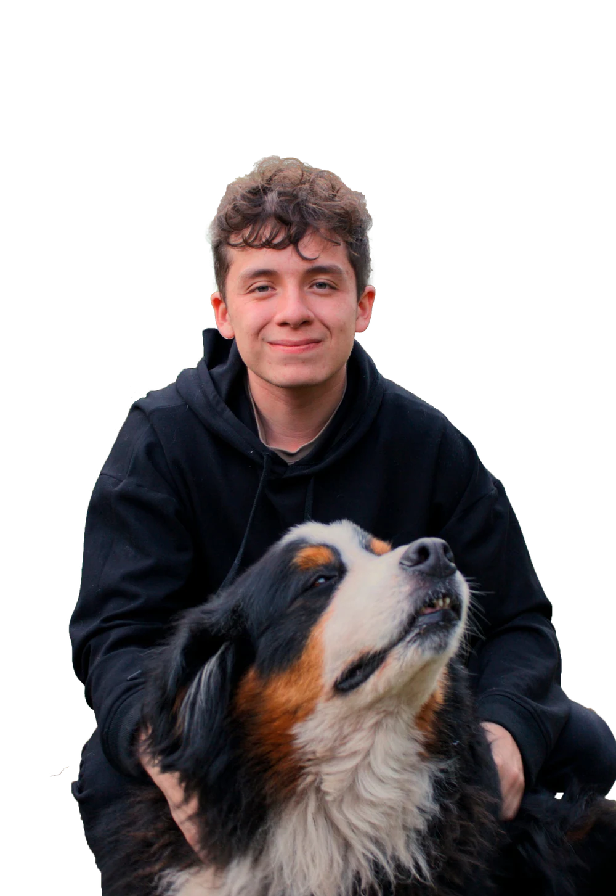
Selección de trabajo
Proyectos
Dos formas de crear: productos digitales que entienden a sus actores, y assets 3D para videojuegos donde la técnica honra el concept visual.
Dreaming
Dreaming nació de identificar a sus actores clave: makers (emprendedores de la impresión 3D), diseñadores 3D y consumidores, y ver que ninguno tenía un punto que los conectara.
Dreaming es ese punto: un ecosistema donde los tres se necesitan y se benefician entre sí.

Nexo
Nexo nació al ver que las entidades financieras tienen datos enormes sobre sus afiliados, pero les envían ofertas genéricas que ignoran su momento de vida real.
Nexo es el puente: cruza esos datos con las metas que el propio usuario declara, para ofrecer crédito explicable en el momento justo, como oportunidad y no como deuda.
Knoa
KNOA nació de identificar el verdadero problema al estudiar por cuenta propia: no es la falta de información, es el exceso, un mar infinito de opciones sin ninguna guía, el mismo rol que cumple una universidad.
KNOA es esa guía: con ayuda de un modelo de lenguaje, perfila a cada usuario y le genera una ruta de aprendizaje completa, dándole control real sobre qué y cómo aprende.
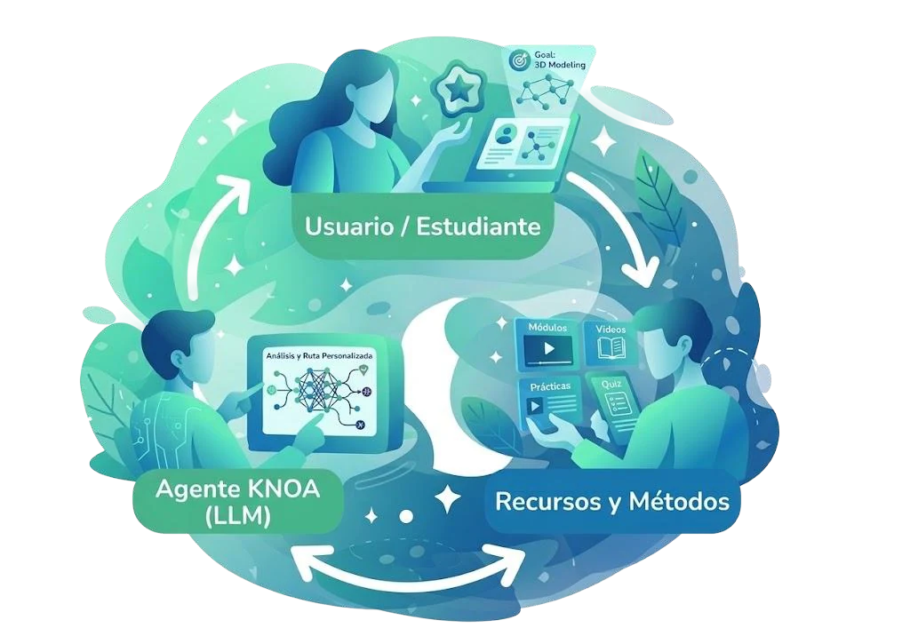
Scal
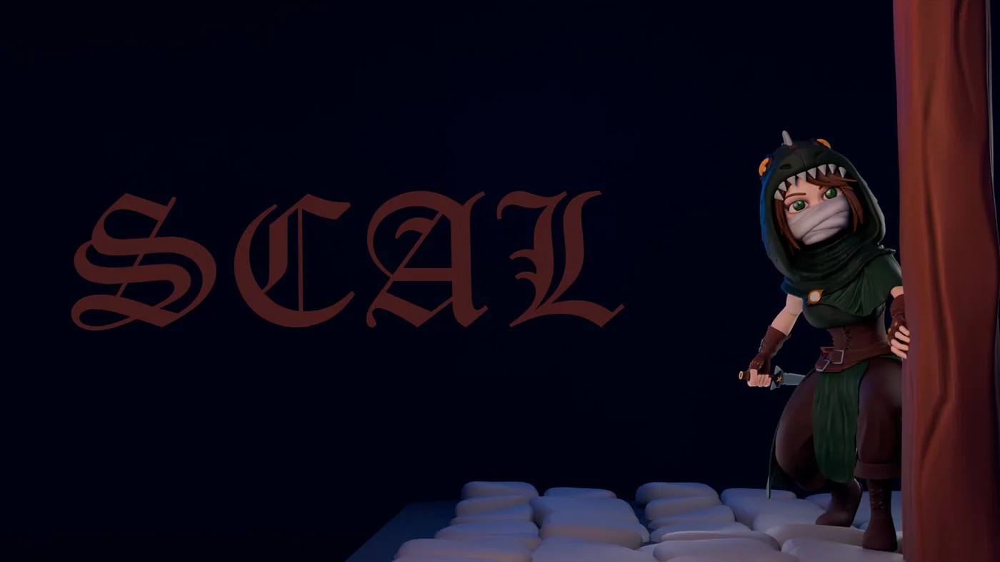
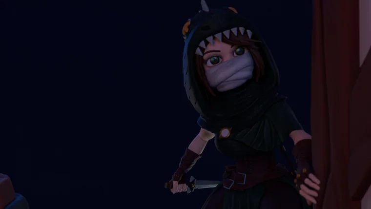
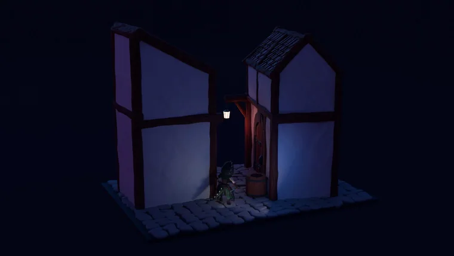
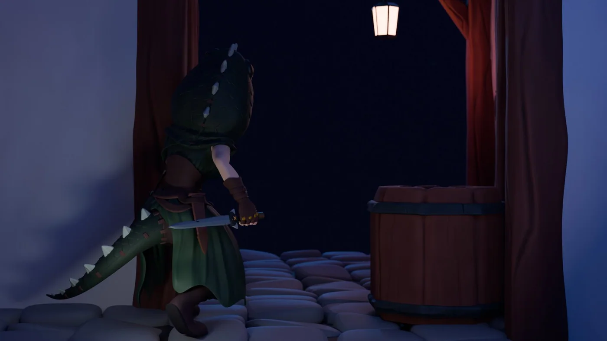
Scal nació en una competencia de modelado 3D de tres semanas. A partir de un concept base, el reto fue reinterpretarlo y trabajar bajo presión para cumplir con las estrictas métricas de un jurado. Es un trabajo 100% de mi autoría: cada detalle fue modelado por mí, sin assets externos.
Kora
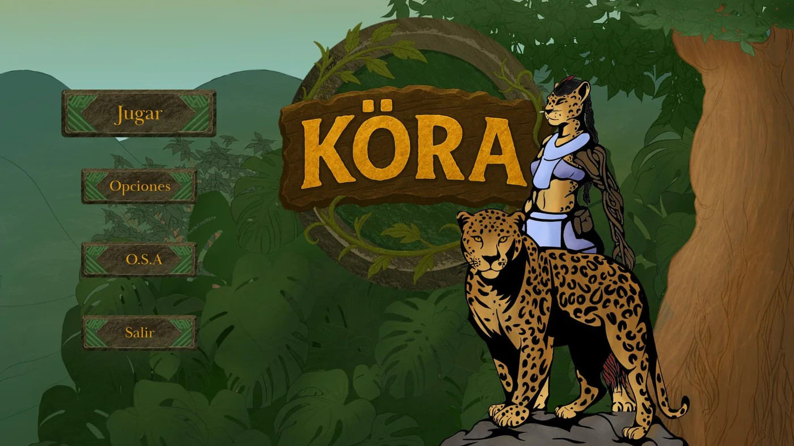
Menú del juego · arte hecho por DanielArt (concept artist de Kora).
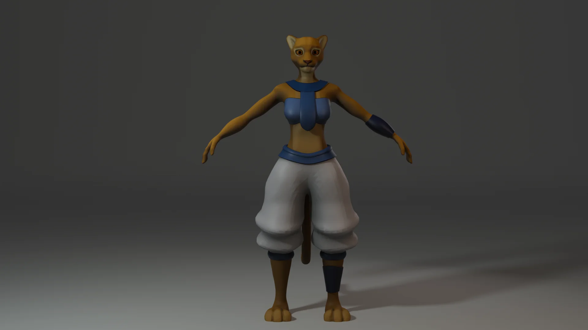
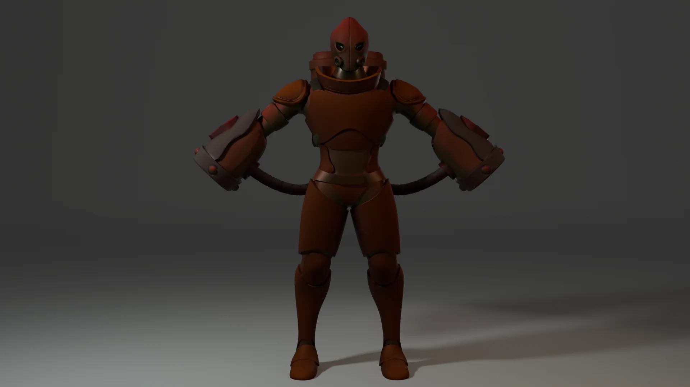
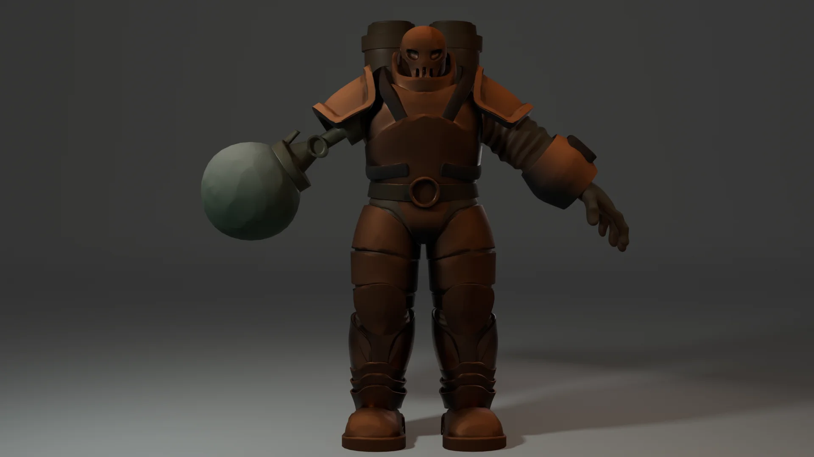
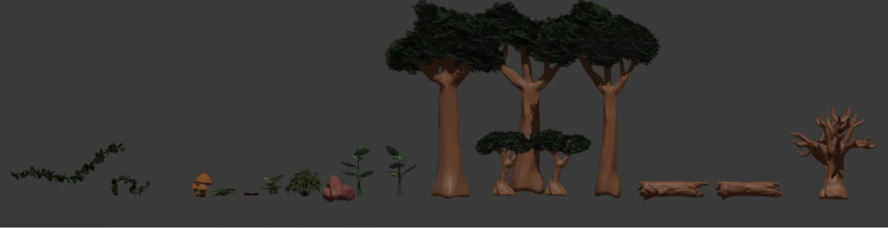
Kora ha sido mi proyecto más ambicioso en el desarrollo de personajes y props 3D. Fue un reto integral en el que tuve que dominar la optimización topológica para garantizar un rendimiento perfecto en motores de videojuegos. Lideré todo el pipeline de producción: desde la retopología, rigging y texturizado de los assets, hasta la creación del concepto original del videojuego, diseñando un universo visual inspirado profundamente en el folclor amazónico.
A New Hope
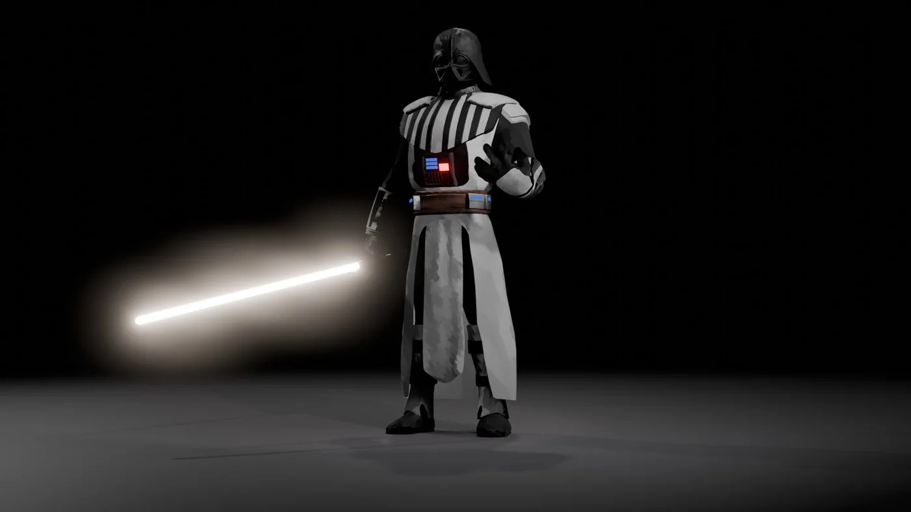
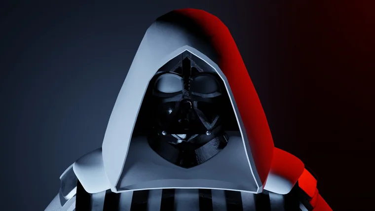
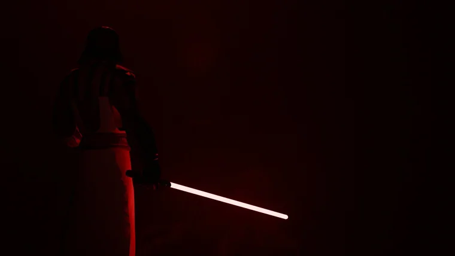
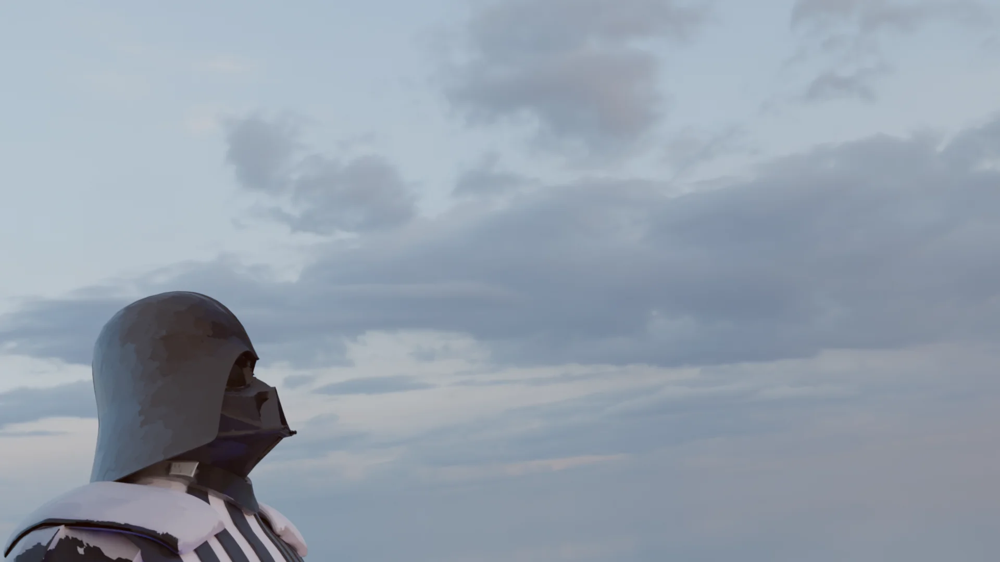
A New Hope nació como un proyecto académico de temática libre. Aproveché este espacio como un reto personal para desarrollar un personaje game-ready, completamente funcional para videojuegos, abarcando todo el proceso técnico, incluyendo el rigging. Para lograr una dirección de arte similar a la de la serie Arcane, tanto las texturas como los mapas de normales fueron pintados meticulosamente a mano.
Gladiator
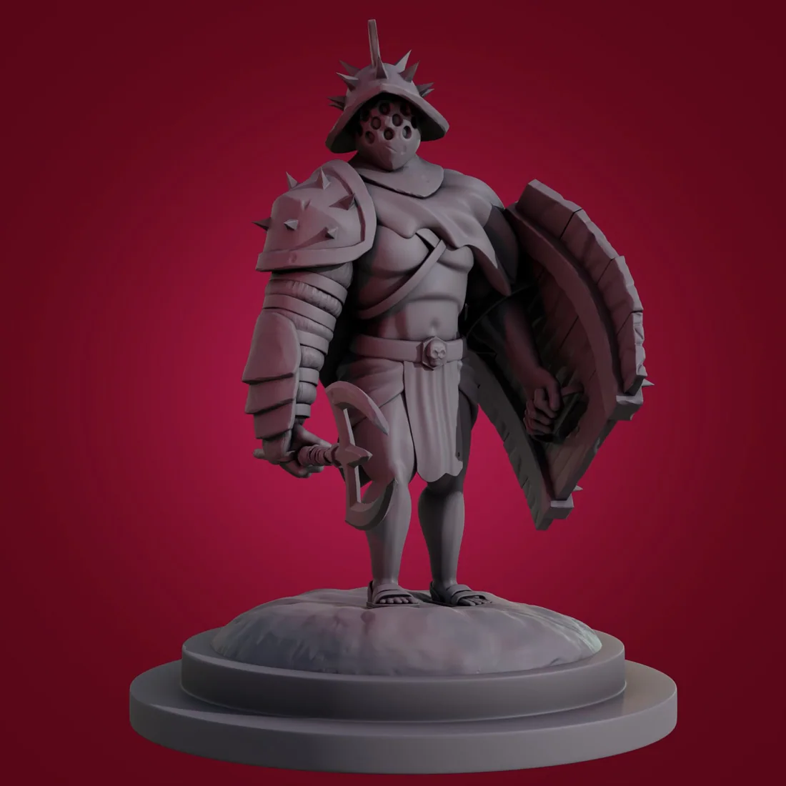
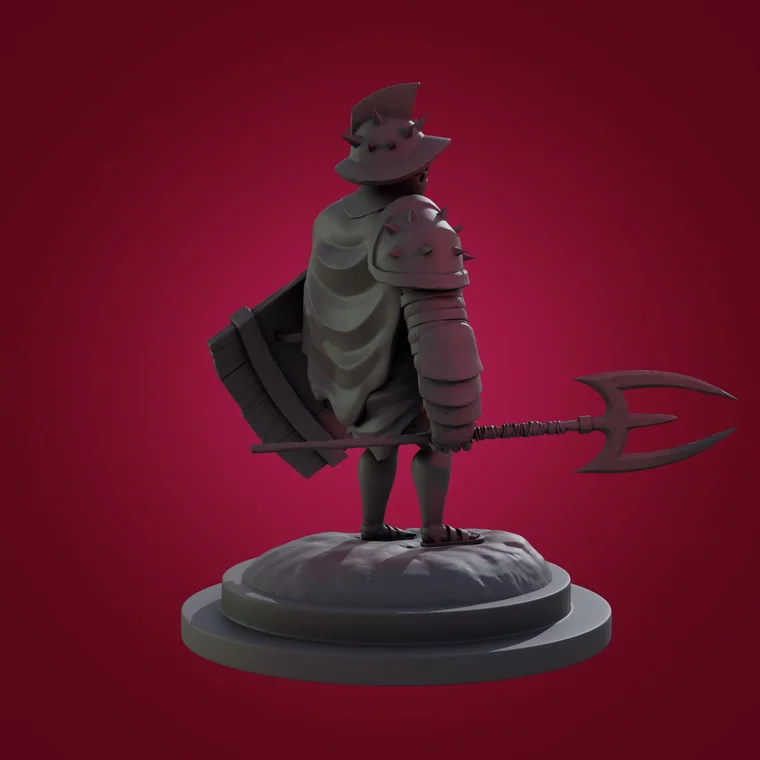
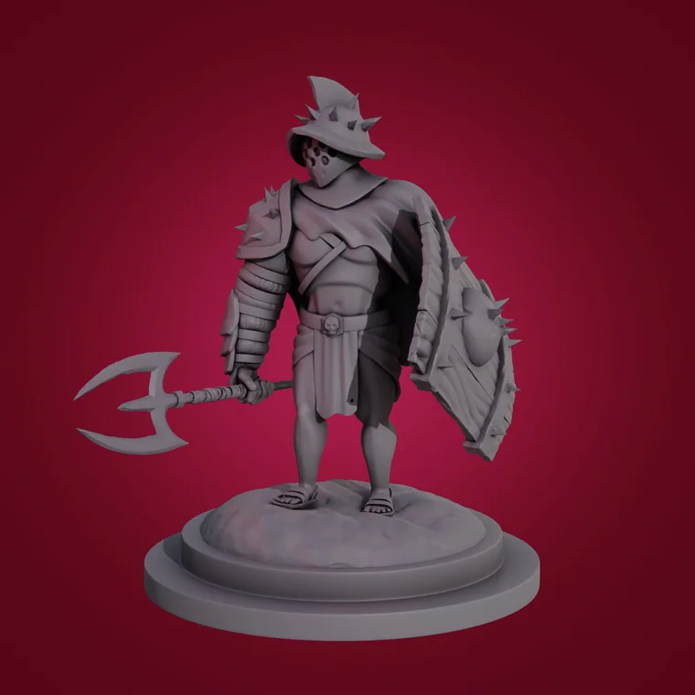
Concebido como una práctica de esculpido digital puro, el objetivo fue crear un personaje de estética estilizada optimizado para impresión 3D. El modelo se desarrolló íntegramente mediante sculpting, y se complementó la presentación visual experimentando con un sistema de nodos para el fondo.
Quien soy
Un poco mas
de mi
Soy Diseñador Industrial en la Javeriana, con un perfil híbrido entre diseño y desarrollo. Soy una persona apasionada, con una curiosidad intelectual que no se conforma fácilmente y una visión clara de hacia dónde quiero llegar. No le temo a los retos: aprendo lo que haga falta para resolverlos. Para mí, diseñar es entender qué compone realmente un producto antes de proponer una solución.
3
proyectos de producto Digital
+5
proyectos de modelado 3D
2
idiomas · ES / EN
UX+Dev+3D
perfil híbrido
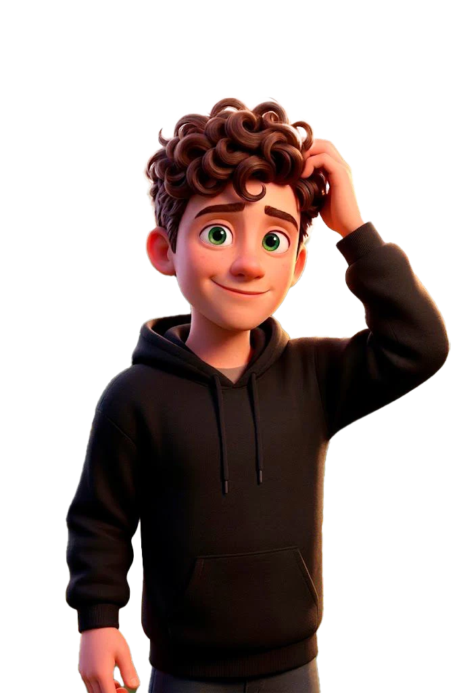
Herramientas
Referencias
Cosas que me describen
"Detrás del diseñador hay puros contrastes. Estos datos curiosos definen cómo soy: desde la disciplina literal del gimnasio, hasta la conexión conceptual con historias como La La Land. Mira el trasfondo de cada imagen y me conocerás un poco más."